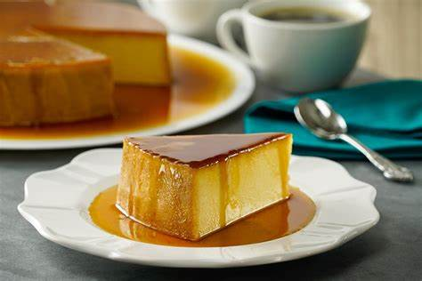

Aprende conmigo
Receta super fácil para preparar un rico postre
Flan napolitano

Nombre del párrafo
Brincar a la parte de la página con “nombre-anclaje” id
Receta de Flan napolitano
Flan napolitano
Ingredientes
Elaboracion
Consejo culinario
Consejo nutricional
Recuerda que los postres pueden incluirse dentro de la alimentación correcta, siempre y cuando se consuman moderadamente
Ingredientes
| Ingrediente |
Cantidad |
| Azúcar refinada |
3/4 taza |
| Leche Condensada |
1 lata |
| Leche Evaporada |
1 lata |
| Queso crema |
190gr |
| Huevo |
5 pz |
| Esencia de vainilla |
1 cda |
¡A cocinar!
Calienta
- Horno precalentado a 180 °C
- Vierte el azúcar en una flanera y calienta a fuego medio para que se forme el caramelo; ladea con cuidado el molde para cubrir la superficie y las paredes.
Cocina
| 3. Licúa la Leche Condensada LA LECHERA® con la Leche Evaporada CARNATION® CLAVEL®, el queso crema, los huevos y la esencia de vainilla. Vierte la preparación en la flanera y tapa con papel aluminio sellando las orillas. Coloca en un recipiente y cocina a baño María en el horno a 180 °C durante 1 1/2 horas. |
Sirve
| 4. Retira del fuego y deja enfriar por completo; desmolda y sirve. |
|
| |
Consejo culinario
Si lo deseas puedes agregar un poco de cocoa.
Información nutricional
264.9 kcal = 1,109kj /por porción.
34.9 g Carbohidratos
10.8 g grasas
7.4 g Proteína
6.1 g Grasas saturadas
139 mg Sodio
34.5 g Azúcares